Today, people are getting more and more withdrawn and detached. They don’t trust each other and they don’t trust the business. Customer expectations have never been lower. Most consumers are content with something passable and quick. They don’t seem to care.
We foster such values as trust and openness. We exceed expectation and bring new experience to customers.
We make pizza and? explore? the world
We are up to make the world more open and we open it up for ourselves.
Logo
В большинстве случаев этот логотип — единственный, который вам потребуется для верстки макетов.
Подпись к картинке
Текстовый логотип
На узких, маленьких носителях размещайте текстовый логотип: например, на ручках и карандашах или на упаковке порционного сахара.
Он черного цвета на белом и светлых фонах, белый на черном, оранжевом и темных фонах.
Подпись к картинке
Логотипы-иконки
Логотип-знак в форме буквы D практически не использует отдельно от текстовой части логотипа, тем не менее его можно найти на макетах для соцсетей.
Круглый логотип — это картинка-аватар для аккаунтов в соцсетях.
Логотипы на фоне
Белый — основной фон.
Черный фон тоже допустим.
А на оранжевом фоне используйте белый текстовый логотип без знака.
Свободное поле вокруг логотипа
Оставляйте свободное поле вокруг логотипа. Минимальное значение равно букве «О».
Следите за тем, чтобы между заголовком и основным текстом был достаточный контраст кеглей. Например, если основной текст набран кеглем в 12 пунктов, заголовок должен быть больше примерно на 165%, т. е. 19–20 пунктов.
Color
The Holy Trinity
Наши цвета — оранжевый, белый и черный.
Оранжевый
Белый
Черный
Главный цветовой идентификатор бренда.
В случаях, когда мы хотим сообщить, что это — мы, заливаем носитель оранжевым.
Отражает чистоту и открытость — принципы компании.
Идеален для базового текста.
Дисплейные цвета
Оранжевый
Белый
Черный
RGB 255 105 0
HEX #FF6900
RGB 255 255 255
HEX #FFFFFF
RGB 0 0 0
HEX #000000
Печатные цвета
Оранжевый
Белый
Черный
CMYK 0 75 95 0
Pantone 1505 U
Oracal (641/8300/8500 Series) 034 Orange
CMYK 0 0 0 0
White
Oracal (641/8300/8500 Series) 010 White
CMYK 0 0 0 100
Black
Oracal (641/8300/8500 Series) 070 Black
Дополнительные цвета
В основном мы используем дополнительные цвета для кодирования продуктов в меню: мясные продукты и продукты без мяса, холодные и горячие напитки, десерты и салаты.
Мы также кодируем продуктовые семейства (группы, категории). Эти цвета должны подчеркивать (выделять, пояснять) вкус или настроение продукта (например, розовый цвет семейства продуктов на основе мороженого или розово-серые цвета для пасты).
описание дополнительных цветов и правила их использования
Key Values
Dodo Pizza is a multilayered brand. We have a number of overlapping audience groups, ideas, and interaction contexts. That’s why our message depends on the situation and the values that are relevant to the context. The values, the brand and the tone stay the same.
What’s the idea
What do we do
Who is interested
Taste
The first concern of a customer about a new restaurant is the taste of food.
Our product is not just pizza taste but the taste remains the primary value that attracts people and makes them return.
Taste is crucial.
We bother about ingredients and select the best suppliers. We never cut corners in terms of toppings.
We bother about storage rules and we are ruthless to toppings which don’t comply with our quality requirements.
We bother about dough. We are obsessively selective to dough ingredients and continuously improve our recipe. We do a sudoku puzzle of minutes, second, degrees, and grams. We build supply centers to ensure reliable conditions and maintain consistent dough quality with large production volumes.
We sell pizza that is fresh and hot. Our average delivery time is 34 minutes. Pizza slices from the display at the counter are on sale for 60 minutes. Then we write them off.
We bother about coffee. We select only 100% arabica. We control roasting and storage. We use high-tech coffee machines to make sure everything is OK.
Everybody. Any random person.
What’s the idea
What do we do
Who is interested
Quality
The product we make is not just pizza.
Delivery and the seats in the dining room are also a part of it. The product also includes the brand as a guarantor of quality.
All these things define sales.
Quality is crucial.
Good pizza is the one that is hot and delicious.
Good menu is the one that caters to different tastes and all the items are available.
Good order placing is a user-friendly website and mobile app, minimal amount of steps, convenient payment, and an opportunity to track your order.
Good delivery service is fast, performed by friendly drivers, and doesn’t make mistakes in the order.
Good pizza store is clean and comfortable. It has enough seats for any company size. You meet smart and friendly cashiers who don’t make you wait for too long. And the kids have a place to play.
Standards. All our quality requirements are described by instructions and standards.
Dodo IS provides exhaustive data that allow to act on time, identify problems and find solutions.
All our followers. Those who care.
What’s the idea
What do we do
Who is interested
Openness
Openness is:
Our philosophy. We think that openness will make the world better. To open up means to trust, believe in people and their good intentions.
Our need. We are not afraid of criticism. We are not phobic or paranoid. We are happy to share.
Our communication style. We don’t conceal fails and share financial details. It endears people make them trust us.
Our quality control. Anyone can come to the kitchenand check if we observe our standards.
Our driver of improvement. Transparency brings us hints insights, and inspirations.
Openness is crucial.
Open kitchen
Glass walls. All the process is in plain sight.
Kitchen tours.Anyone can come to the store, put on a gown and a hat and we will show them around the kitchen.
Web-cameras. Anyone can see a live-stream from any store on our website.
Public control
Mystery shoppers. There are no hirelings among them. It’s a secret society which includes thousands of our loyal customers. They are honest and incorruptible.
Inspectors.We select them from our customers and vest with authority.
Ratings. Inspections result in quality ratings that are updated every week. They are available for all partners. And they can they can lose the store if the scores are low.
Transparent business
Director’s day. On this day, store managers and franchisees put on uniforms and help their crew to see the business from the inside.
Live weekly meetings. Every week we live-stream corporate meetings. Head office managers give short presentations about the news, achievements and plans of the company. Everything is available online.
Financial reporting. We openly post our financial results: revenue and costs, gains and losses.
The core of our followers – the Dodo people. And the fan-club of entrepreneurs.
What’s the idea
What do we do
Who is interested
Trust
For us it’s:
Consciousness of power. We trust people because we are confident of ourselves, our actions, our product, and our beliefs. We are not obsessed with control because we are strong. Wa don’t build walls, we broaden horizons.
Our way to address the world. We are not going to impose standards, we want to make a difference and learn at the same time.
Vision of the future. We are planning a long game. And in the long run, trust is a big asset and competitive advantage.
Trust is crucial.
We trust customers
We promise to deliver on time. And the customers decide themselves if we are late or not. We trust their words.
We give a birthday discount without checking ID.
If a guest accidentally spills their coffee, we give them another one for free and won’t ask questions.
If a customer complains, we don’t argue. We appriciate feedback, correct our mistakes.
We trust partners
Our new franchisees get access to all the information without signatures.
We trust partners’ opinion. New formats, unusual situations, new products, and initiatives.
We trust the world
We don’t embellish facts. We admit mistakes. We accept criticism with gratitude.
The Dodo people core in the first place. And, actually, the others too.
What’s the idea
What do we do
Who is interested
+
Community
People need openness and trust to bring them together.
We create environment in which people would get less indiferent and withdrawn, more integrated and open to each other.
Community is even more crucial.
Product that unites people
People don’t often eat pizza alone. They enjoy it with partners, friends or family.
Place that unites people
Guests usually come to our stores in couples and groups. The atmosphere in the store encourages people to communicate and make friends. Even if don’t socialise, they can just be around nice people.
Brand that unites people
Dodo Pizza is a friendly brand. We are easy-going, curious, and nice. With us, you don’t need to pretend. Just be yourself.
Totally everybody.
Manifesto
Мы видим, что мир становится всё более закрытым и разрозненным. Люди меньше доверяют друг другу, и особенно люди меньше доверяют бизнесам. Потребительские ожидания снижаются: «пусть будет быстро и приемлемо, остальное неважно». Людям всё чаще бывает всё равно.
Audience
We look at the people who come to our stores, order delivery or communicate with us on the internet. We seem to know quite a lot about them. Dodo people are those who are interested in our story, who follow our news. The rest can be divided into several categories depending on their interest and loyalty.
Dodo people
Dodo Pizza is not just a pizza chain for them. They love and understand us and we love and understand them better than any other company. They often join the company to be be a part of this big story.
They are young and energetic. They are creators and communicators. They want recognition and seek to fulfill their potential. They are knowledgeable in new technologies, curious and socially active.
Profit matters for them but they are more likely to look for an opportunity to earn rather than to economize. Our chain provides them with an escape from routine, encourage them to spend more time on things they like. They need us because they want to share us with others. They appreciate our inventiveness and creativity.
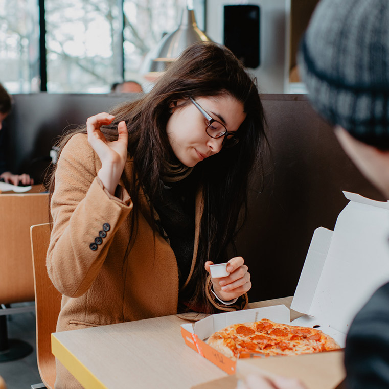
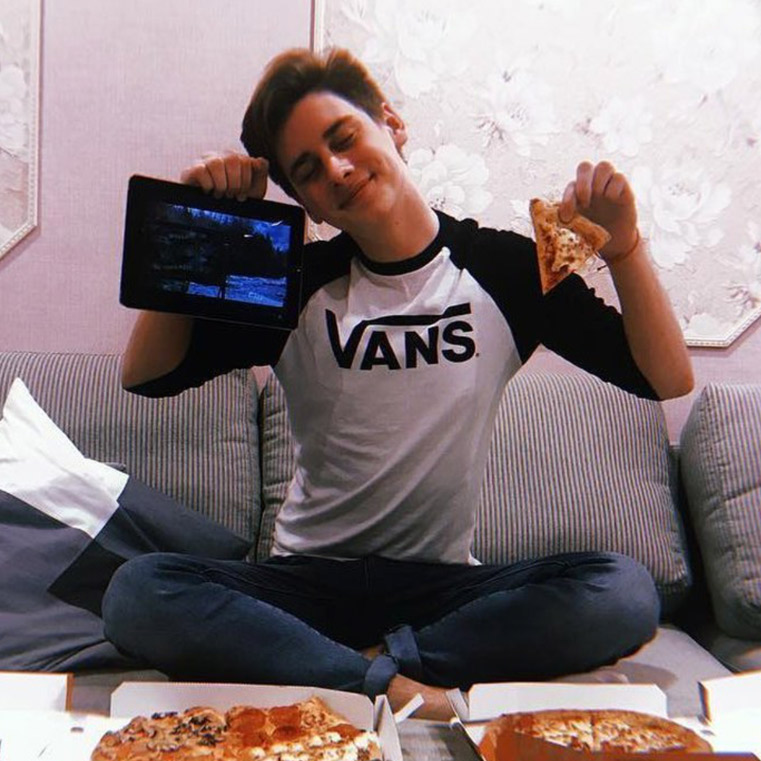
Those who care
This is the largest group. It includes quite different people united by one common feature — they do care. What to eat, where to live, what to do, what to look like and whom to talk to. They care for friends and family. They are not indifferent in the broadest sense of the word.
Students. They are communication fans , they are a bit chaotic but very open-minded and loyal.
They appreciate comfortable atmosphere and independence from adults. They love to be associated with something great and meaningful.
They look for something that is open, associated with youth and easy to get.
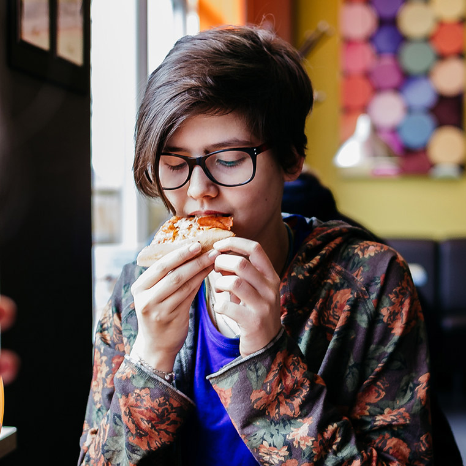
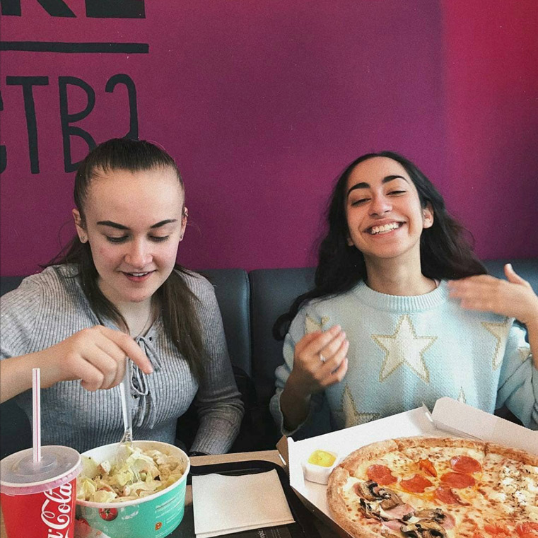
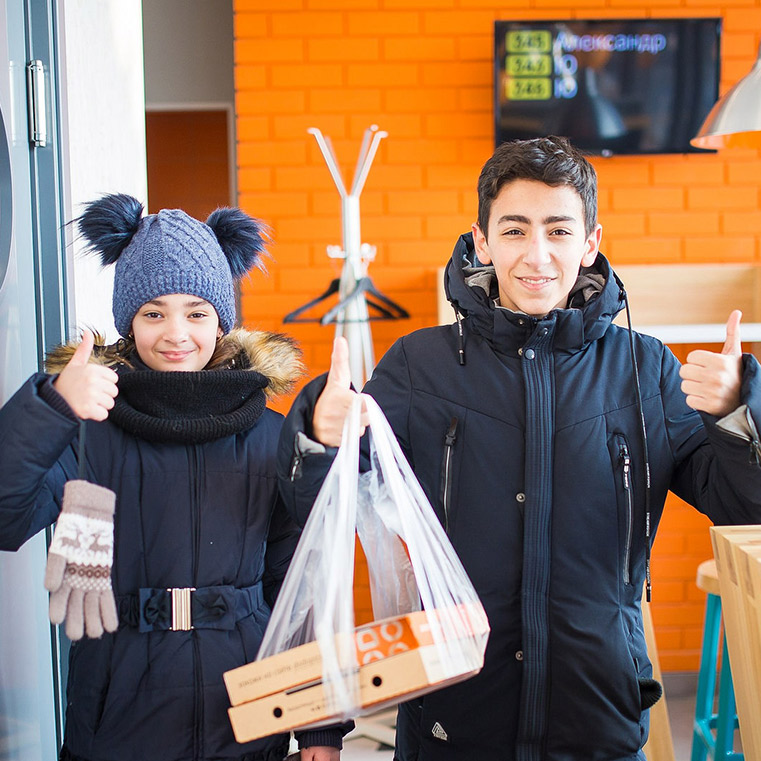
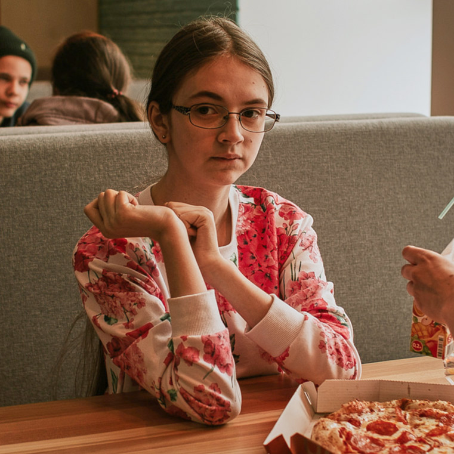
Loners. They are quite different people. They usually order pizza as a usual meal when they get bored witha routine diet or they are just too tired to cook.
They prefer things that are not too complicated.
Mature professionals. They are attentive and rational, not very loyal.
They appreciate the taste. They prefer stable menu and predictable service.
What they don’t want is a surprise. Reliability and safety are their highest priorities.
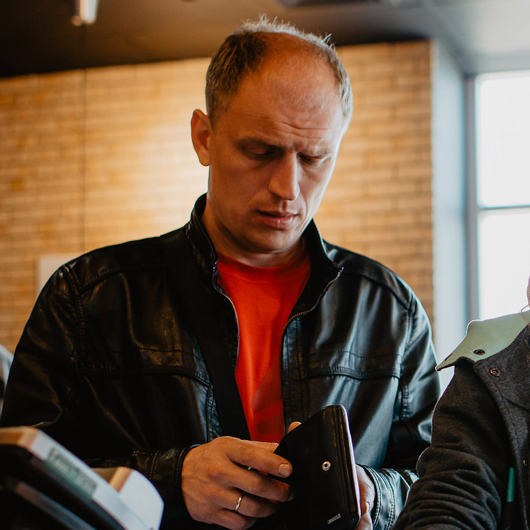
Young couples. They come to the store or order delivery to escape from the routine and give their evening a sense of occasion.
Friendly staff and customer focus appeal to them most.
Семьи с детьми. Families with children. They are positive, unfocused, demanding and loyal. They usually come to escape from the Hedgehound Day, and the anxiety of the week days.
They appreciate comfortable atmosphere, safety and an opportunity to relax.
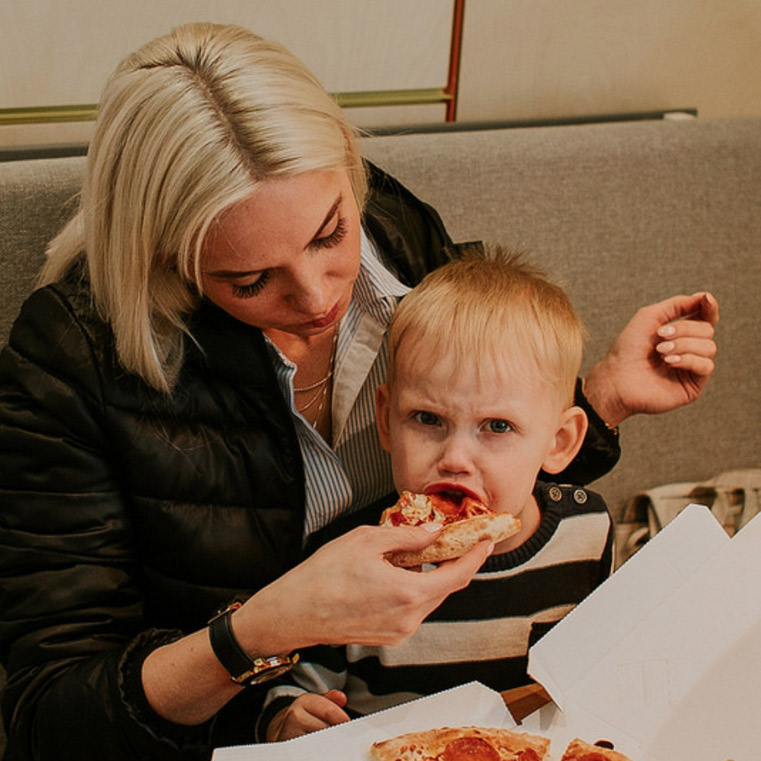
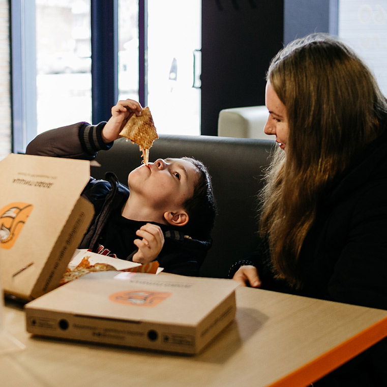
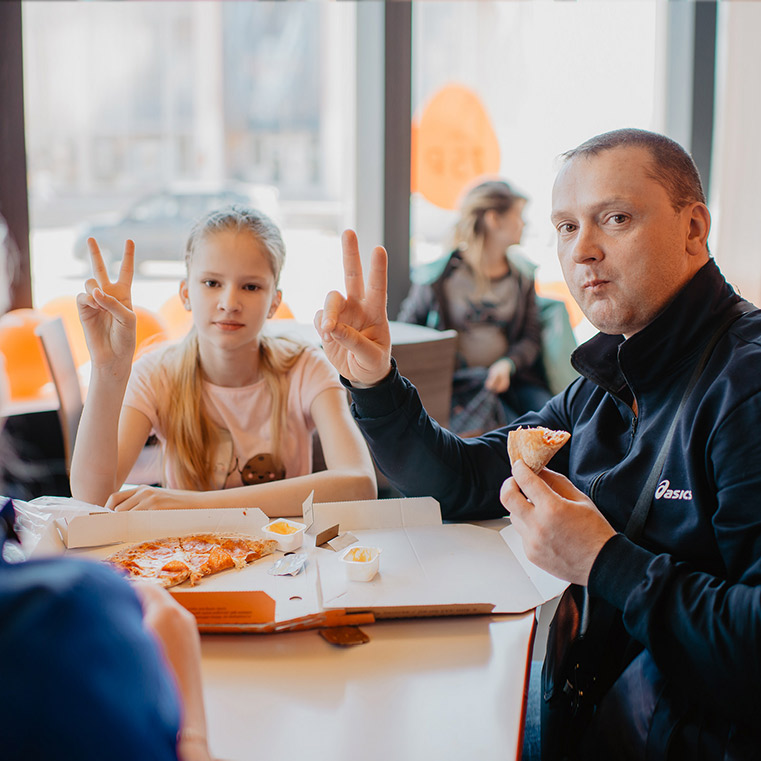
Retired people with grandchildren. Attentive, demanding, not very loyal.
With them, we use our most clear and simple language. We are friendly and honest.
Will the bird fly?
From the very start our story has been followed by thousands of young managers and entrepreneurs. They don’t necessarily order our pizza. They may even live in towns where Dodo Pizza hasn’t opened yet. However, they know about us and they are interested in our story.
A fan club of entrepreneurs. No matter they like us or mock, they love to discuss us in bars and kitchens.
It’s important for them that we keep our word and remain open.
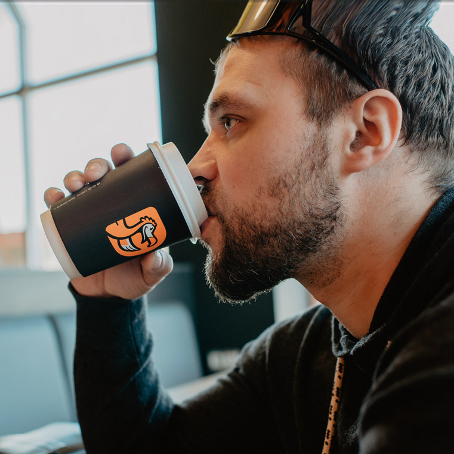
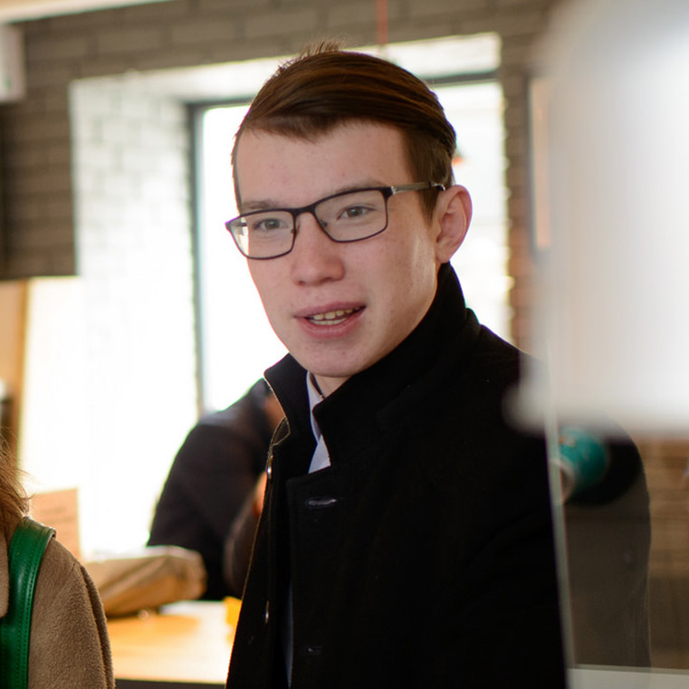
Tone of voice
Построение любой коммуникации с клиентом стремится к определенной цели. Наши интонация и язык помогают двигаться к ней максимально прозрачным и доступным способом. Если не получается описать цель нашим языком и с нашей интонацией, то скорее всего эта цель не имеет для нас ценности.
Обратная связь - наилучший показатель того, как работает TOV. Как известно, человеку свойственно перенимать манеру разговора собеседника, который ему симпатичен. Если мы видим, что в процессе коммуникации клиенты повторяют наши язык и интонацию, это значит, что мы верно смогли донести до них свои ценности посредством голоса.
В любой коммуникации наш характер и ценности проявляются через уместные слова и верную интонацию, правильное сочетание прямоты, искренности и заботы. Tone of voice отражает нашу культуру, незаметно связывая все точки контакта — от телевизионной рекламы и постов в соцсетях до речи промоутеров и разговора с кассиром и курьером.
Интонация
Это основная вибрация, исходящая от нас всех. Это стиль общения. Это то, как мы ведем себя по отношению к клиенту. Мы избегаем излишней официальности, но не нарушаем личного пространства клиента, не задеваем его достоинство.
В любой точке контакта мы простые для восприятия, открытые и ответственные. Наш продукт - самый лучший, мы гордимся им, но не кричим об этом, не выставляем напоказ, не заискиваем, а доказываем это своим отношением.
Мы уважаем нашего клиента и до последнего доверяем ему без всяких условностей.
Мы любим пошутить, в том числе над собой, потому что юмор помогает сократить дистанцию. Но делаем мы это аккуратно — думаем вперёд, кого это может задеть.
Язык
Язык нашей коммуникации максимально простой и доступный. Нашим языком можно объяснить что угодно даже 5-летнему ребенку или 80-летней бабушке. Мы любим всё упрощать, а не усложнять. Но не впадаем в крайности. Так как наша аудитория очень широкая и разнообразная, мы предпочитаем обращаться ко всем на “вы”. При этом мы не стесняемся молодежных и современных выражений, если они помогают доступнее объяснить что-то. Однако избегаем вульгарностей. И это касается как вербальных носителей (тексты писем, сообщений, аудио-реклама, копирайт), так и невербальных (дизайн макетов, видео, музыка, упаковка, униформа…)
Не Додо
Додо
Добрый день, Игорь Сергеевич! Уведомляем Вас о том, что на Ваш расчётный счёт поступили средства в размере 20 тысяч 00 копеек. Просим Вас обратиться в отделение банка для прохождения процедуры оформления получения перевода.
Здравствуйте, Игорь! Представьте, что ваш личный кабинет на сайте - это карман зимней куртки. И заглянув туда, вы найдёте 500 Додо-рублей. Это ли не радость? Бонусы были начислены вам за прохождение опроса. Хорошего дня :)
Не Додо
Додо
Попробуйте наш новый восхитительный кофе. Он создан из специально отобранных зёрен арабики. Почувствуйте пленительную силу его бодрящего аромата. Ощутите нежный и в то же время интенсивный вкус, наполняющий энергией на весь день.
Попробуйте наш новый кофе! Мы слегка изменили смесь зёрен и способ обжарки. Чтобы напиток стал еще ароматнее, насыщенней и вкуснее. Хочется стаканчик бодрящего? Вэлкам в нашу пиццерию!
Не Додо
Додо
Новая пиццерия «Додо Пицца» открывает свои двери для гостей. К Вашим услугам комфортабельные мягкие диванчики, удобные столики из натурального дерева и детская комната.
Разнообразное меню предлагает ароматную традиционную пиццу с травами на пышном тесте, закуски, лёгкие десерты, горячие и прохладительные напитки. В самом центре города, всего в 300 метрах от пл. Ленина.
Мы совершили открытие, ура! В центре города теперь есть «Додо Пицца». Это семейная пиццерия, в которой есть даже игровая для детей.
Меню включает салаты, десерты, закуски, напитки. И конечно же нашу гордость - свежую пиццу на пышном тесте и с хрустящим бортиком. Прямо из печи!
Не Додо
Додо
Что вы здесь устроили? Вещи собрали и на выход! Я сейчас ментов вызову (реальный пример).
Просим вас перестать шуметь либо покинуть пиццерию, потому что это мешает другим гостям. В противном случае нам придётся вызвать охрану.
Не Додо
Додо
Ваззап, братишки, чокаво? Для нас запилить вам быстрого хавчика - изечки. Наши парниши прилетят на крыльях ночи как бодрые спэйс-ковбойз в течение часа. Йо!
Привет, друзья! Быстро доставить пиццу, пока та еще горячая? Это про нас. Проворный курьер домчится к вам менее, чем за час!
Мы не притворяемся и не стыдимся собственных мыслей, поступков и неудач. Мы всегда готовы к диалогу и с радостью прислушиваемся к чужому мнению. Нам не нравится лицемерие, поэтому мы всегда честны и прямолинейны, но при этом сохраняем душевность и доброту.
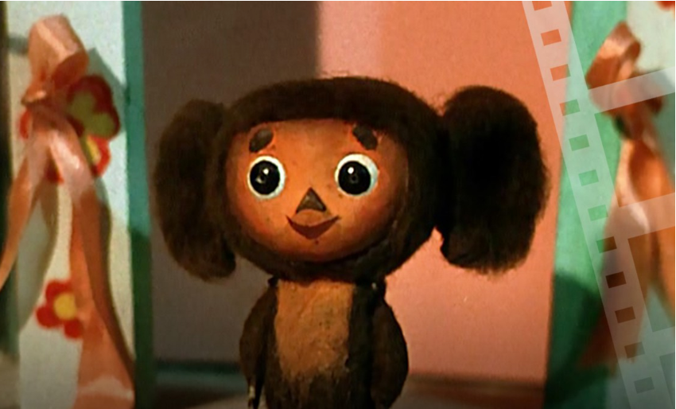
Любознательный и интересующийся
Мы, словно дети, постоянно интересуемся, как устроен мир. В наших головах бесконечно вертится вопрос «Почему?». Для нас не бывает обыденных и скучных вещей. Мы хотим узнать в жизни всё-всё-всё!
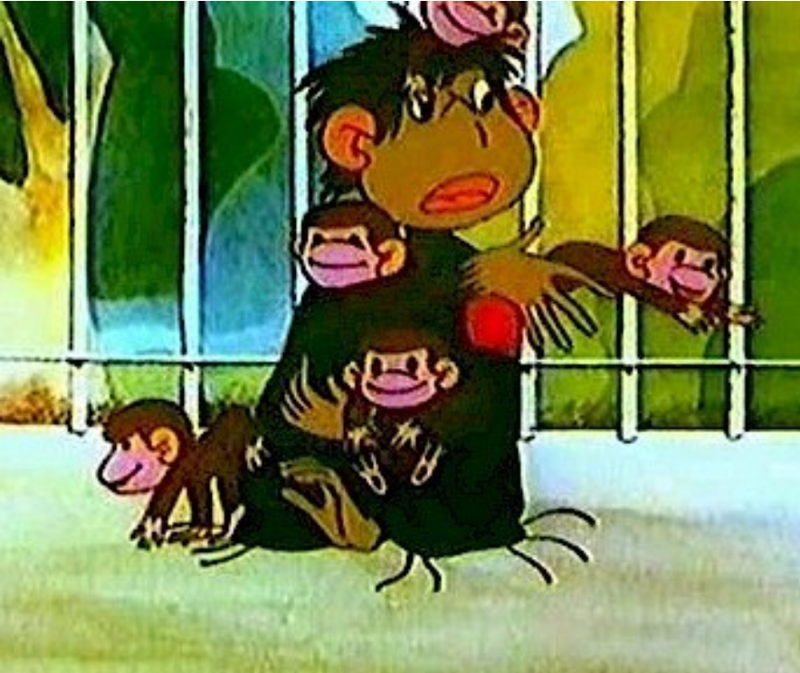
Доверчивый (но не глупый)
Мы слегка наивны в своей вере в лучшее, в людей, в светлое будущее, в то, что можно быть открытыми и успешными. Нас не переубедить, что все вокруг хорошие, только если они не докажут обратное сами.
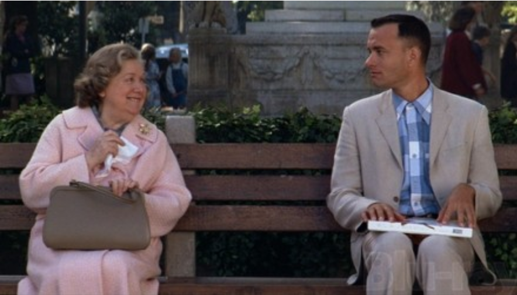
Молодой (но не детский, не инфантильный)
Мы молоды душой и телом. Даже спустя много лет мы хотим оставаться юными, гибкими, активными и меняющими мир.
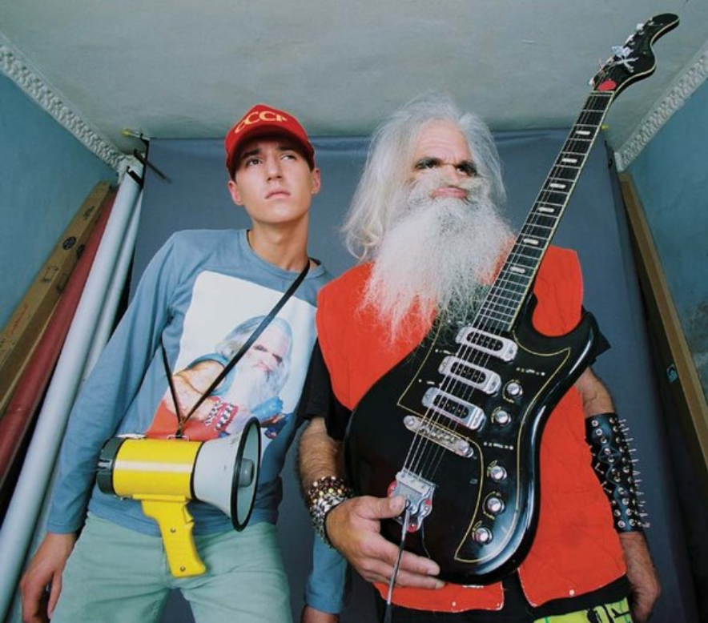
Увлечённый
Мы по-настоящему получаем удовольствие от всего, за что беремся. Задачи любой сложности приводят нас в восторг, потому что мы видим в них возможность улучшить мир.
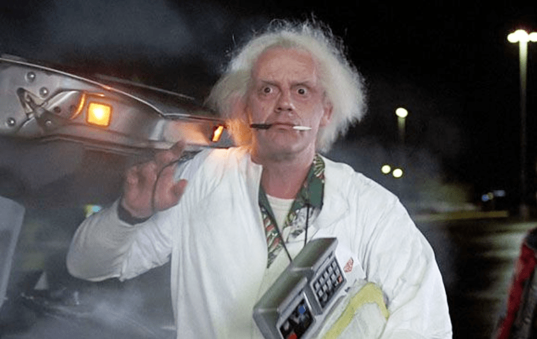
Находчивый
Из любой сложной ситуации мы умеем находить нестандартные выходы. Мы видим жизнь настолько удивительной и многогранной, что зачастую мыслим не так, как привыкло большинство людей.
Яркий
Мы ценим яркие краски жизни, и сами любим заявлять о себе. Нам нравится выделяться, быть броскими, но не вульгарными.
Drawings
In drawings we stick to a uniform recognisable style. It appears in lines proportions and the mood.
We often picture people. They are random characters without a particular story. Nevertheless, they are definitely characteristic of our key audience. They are friendly, open and curious. These are not very detailed drawings and the characters often don’t have faces. However, particular significant features are carefully selected. Such as clothes, hairstyles, and accessory.
Sometimes we picture products or brand elements — pizzas, boxes, stickers or uniform. They are drawn in quite a casual manner but they are definitely recognisable.
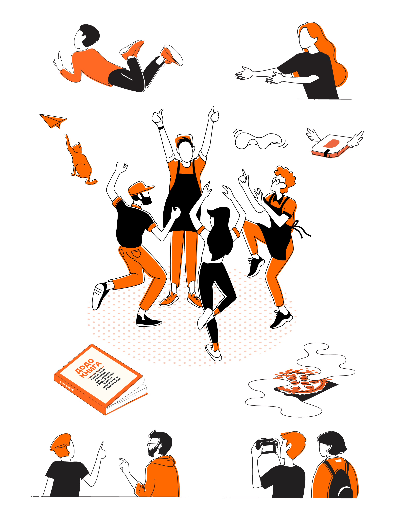
The background is usually white or consists of a light pattern. We use only brand colors. The outline is black, the colors are white and orange.
Here are the key features of our drawings:
No
Yes
Shape
Острые геометричные или наоборот слишком округлые контуры
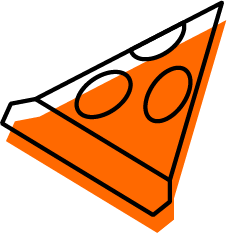
Uneven, shivering lines
Smooth and gentle, reasonable tense lines
No
Yes
Outline
Lines of variable width
Frequent breaks
Uneven, shivering lines
Even lines of a regular width
Rare breaks
No
Yes
Flecks and light spots
Decorative, uneven, exaggerated
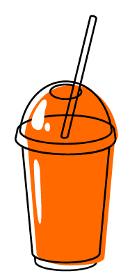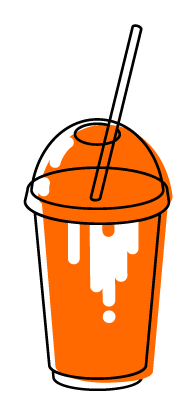
Aligned with the light, accurate, straight
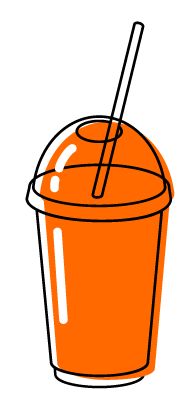
No
Yes
Fill
Shadows, gradient, hatch, absence of outline
One color, with rare variation aligned with the light
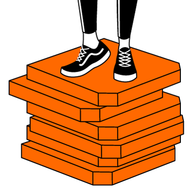
No
Yes
Proportions
Cartoon-like, geometric, realistic
Close to realistic, long limbs
No
Yes
Heads
Sketchy, geometric, simplistic
Absent: eyes, nose, mouth
Casual head outlines with hairstyles
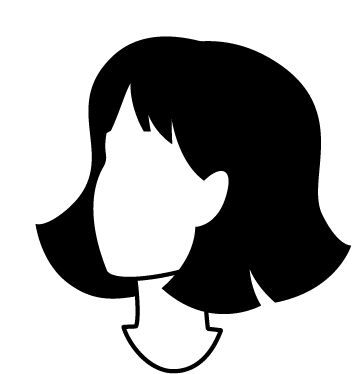
Present: ears, beard, glasses, hats and accessory
No
Yes
Angles
Sharp angles
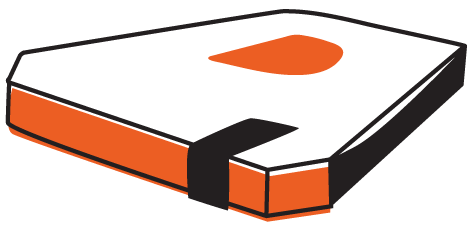
Isometry
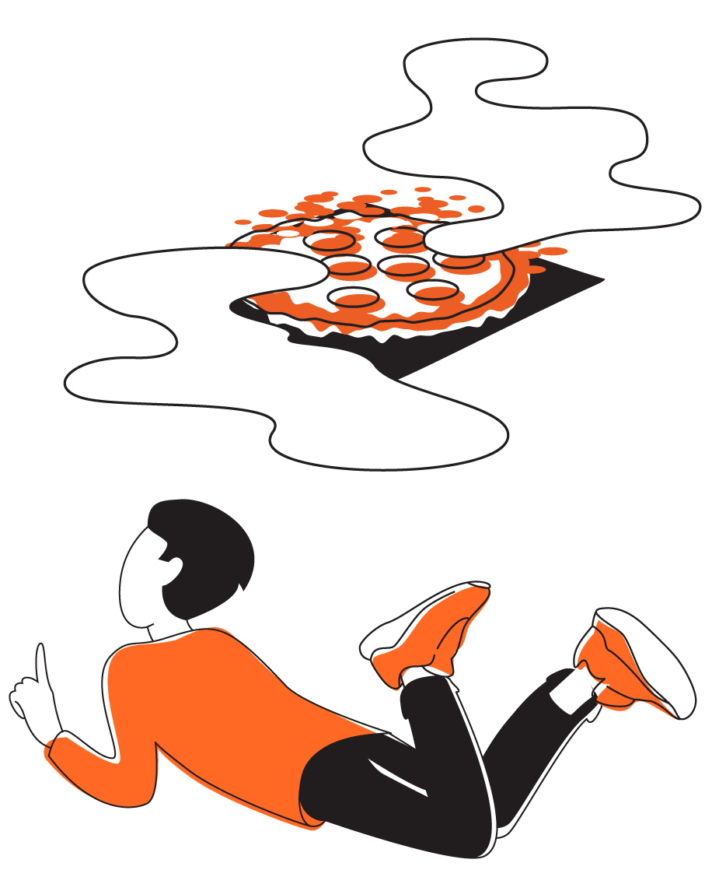
Front look
Mockups
— Акционный — это когда мы предлагаем какие-то условия: восемь по цене пяти, купи и вот это еще прихвати, ну и разное такое.
— Продуктовые — это которые про продукты. Например, когда новую пиццу сделали и ну везде рекламировать, мол, посмотрите, какая пицца.
— А имиджевый — это про наш бренд, про пиццерии в целом, доставку, что открываемся, что ищем людей, что какие мы молодцы.
Общие дизайн-принципы
Создавая макеты, мы следуем определенному набору правил или, как мы их называем, принципов. Они немного различаются между собой для каждой категории, но есть и общие:
— Создаем макеты с учетом системы якорей: оранжевого цвета, набора фирменных иконок, шрифтовой системы и системы сеток.
— Мы любим не перегруженную, легкую для восприятия верстку: один носитель — одно сообщение.
— Предпочитаем эмоциональный, но простой и понятный текст.
— Создаем фотографии и иллюстрации со смыслом, и любим, когда в них заложен твист.
— Используем шаблоны с заданным набором иконок и кегельной сеткой.
Акционные макеты
В нашей системе акционные макеты бывают двух типов:
— Комбо-предложения.
— И, собственно, акционные.
Все акционные макеты создаются на основе шаблонов с набором иконок и кегельной сетки. Элементы в этих наборах уже заданного размера, который не нужно адаптировать под формат. Эдакий UI Kit для рекламных макетов.
Комбо-предложение
Как продвигаем:
— Создаем на основе шаблона.
— Делаем акционные макеты визуально похожими между собой.
— Придумываем простой и понятный заголовок, который раскрывает выгоду предложения.
— Показываем идею «много за мало» через количество продуктов или ситуацию потребления.
— Показываем качество продукта через реалистичные и вкусные фотографии.
— Кодируем акционные макеты в большинстве случаев оранжевым цветом, но «играем» с текстурами, чтобы отделить одну рекламную кампанию от другой.
— Используем на макетах цвета, отличные от оранжевого, когда понимаем, что на рекламном носителе с разных сторон будут разные акционные предложения.
Акционные предложения
Как продвигаем:
— Создаем на основе шаблона.
— Делаем акционные макеты визуально похожими между собой.
— Придумываем простой и понятный заголовок, который раскрывает выгоду предложения.
— Показываем качество продукта через реалистичные и вкусные фотографии.
— Кодируем акционные макеты в большинстве случаев оранжевым цветом, но «играем» с текстурами, чтобы отделить одну рекламную кампанию от другой.
— Используем на макетах цвета, отличные от оранжевого, когда понимаем, что на рекламном носителе с разных сторон будут разные акционные предложения.
Продуктовые макеты
Чтобы было проще, мы разделили продукты на три категории.
Продукты A или «звездные» продукты.
К ним относятся сезонные пиццы и «революционные» продукты.
Как продвигаем:
— Подчеркиваем на макете вкус и качество продукта.
— Помогаем раскрыть вкус продукта названием. Например, название «Жар-Баран» сразу объясняет, что пицца с бараниной.
— Изображаем продукт на фотографии в выигрышном свете и вызываем ей обильное слюноотделение.
— Обязательно добавляем в макет «изюминку», как, например, знак мира на макете пиццы «Четыре сыра».
— Создаем уникальный леттеринг. Он должен разделять общие черты с фирменным заголовочным шрифтом.
— Придумываем иммерсивные решения: от креативной кампании в соцсетях до оформления фасадов и интерьеров пиццерий.
— А еще мы можем иногда нарушать собственные правила, чтобы создать вау-продвижение.
Продукты B
Здесь собрались пиццы с обновленными рецептами, новые закуски и напитки.
Как продвигаем:
— Создаем дизайн на основе шаблона, но иногда можем отойти от этого правила.
— Предпочитаем яркие, чистые цвета. Они не должны отвлекать внимание от продукта.
— Показываем качество и вкус продукта простыми, но вкусными фотографиями.
— Набираем название шрифтом для заголовков. Иногда позволяем себе нарисовать простой леттеринг, как в макете с «Рыжим рожком».
Продукты С
В этой категории мы объединили тестовые продукты. Обычно после тестового запуска мы создаем новые макеты, но уже с подходом категории A или B.
Как продвигаем:
— Создаем макеты только на основе шаблонов.
— Набираем названия шрифтом для заголовков. Никогда не создаем уникальный леттеринг.
— Используем только каталожные фотографии.
— Подбираем цветовую схему из списка дополнительных цветов ТВ-меню в соответствии с основными ингредиентами продукта.
Имиджевые макеты
С помощью имиджевых макетов мы продвигаем бренд в целом, а не конкретный продукт.
К таким макетам мы относим федеральные кампании, оформление пиццерий и все, что связано с наймом сотрудников.
— Мы предпочитаем выделяться благодаря оранжевому фону на цветных фотографиях или оранжевым акцентам на черно-белых.
— Придумываем простые, но креативные сообщения. Например, «Додо последнего кусочка», «Додоставляем».
— Показываем эмоциональные фотографии, которые раскрывают идею сообщения.
Style guide
These rules apply to all interior texts and articles.
No
Yes
The brand name — Dodo Pizza — should be used without quotation marks.
Both words should should be capitalized.
We work at “Dodo pizza”
We work at Dodo Pizza
When addressing the audience use We
Our customers in stores should be called guests.
I’ll try to help you
Customers love our coffee
We’ll try to help you
Our guests love our coffee
No
Yes
Capitalize product and holiday names and names of organisations. No quotation marks.
We have improved “ranch pizza”
Merry christmas!
We have improved Ranch pizza
Merry Christmas!
Avoid using strong words like “wrong”, “forbidden”, etc.
Tearing lettuce leaves with hands is forbidden.
Don’t tear lettuce leaves with hands.
No
Yes
Use Emoji only in social media
They shouldn’t substitute words.
They can’t be used as list markers
Use no more than three in a row
Or better yet don’t use them at all
🎉🎉🎉 Try our new Pepperoni 🍕 with jalapeno! 💣💥 It contains:
📌 Pepperoni
📌 Marinara sauce
📌 Mozzarella
📌 Oregano 🙌
Try our new Pepperoni with jalapeno! It contains pepperoni, marinara sauce, mozzarella, and oregano.
Menu
There are additional rules for the website, mobile app, and advertising materials.


 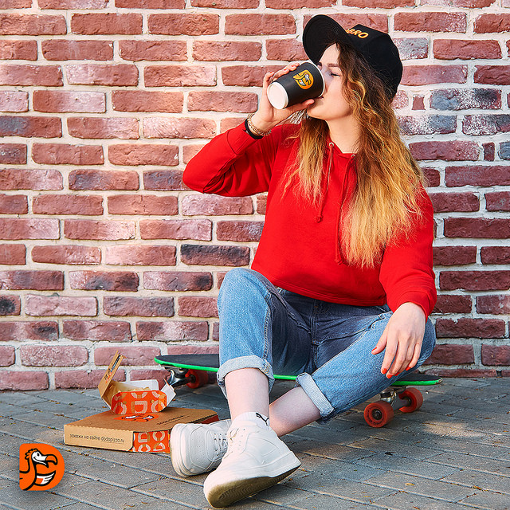
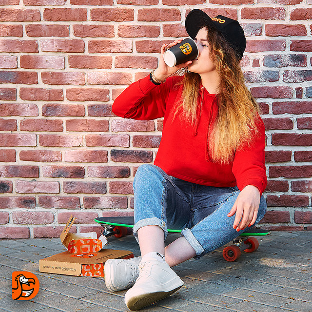